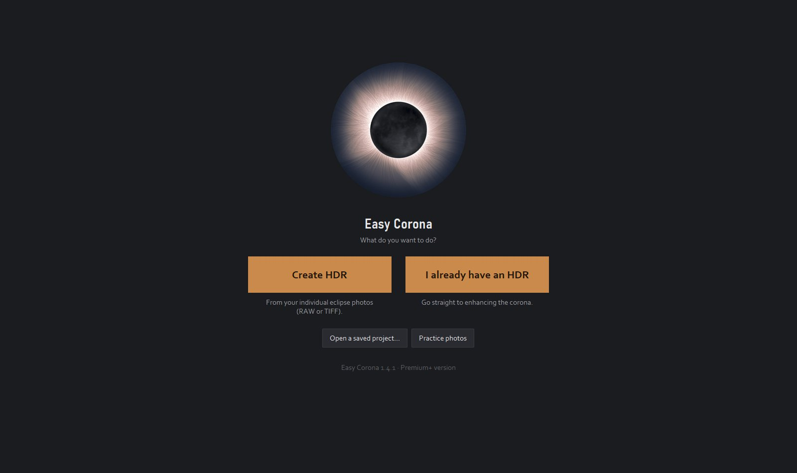
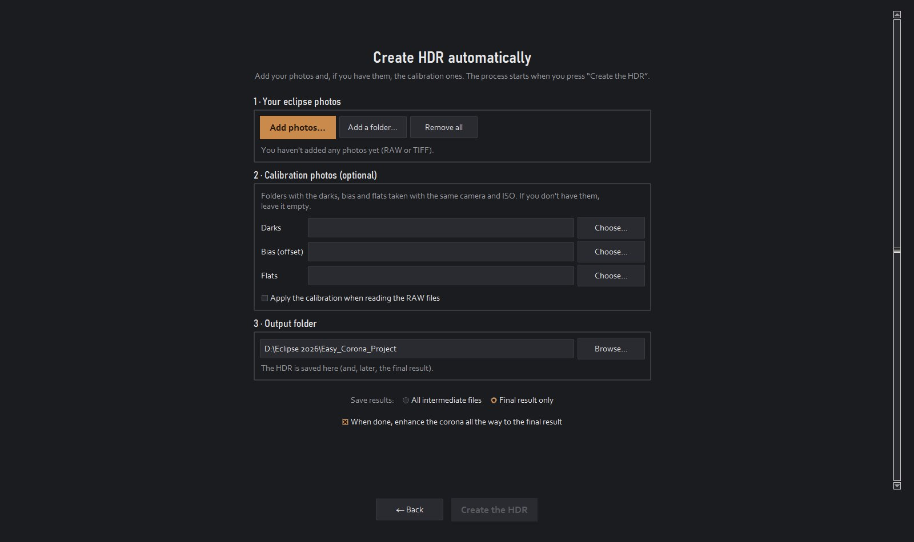
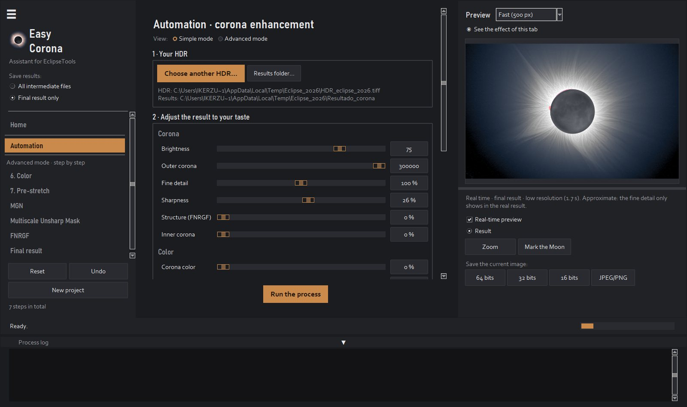
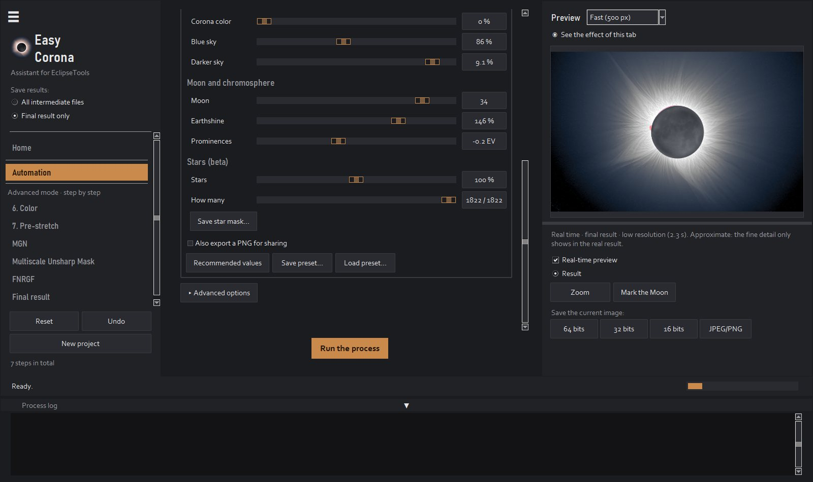
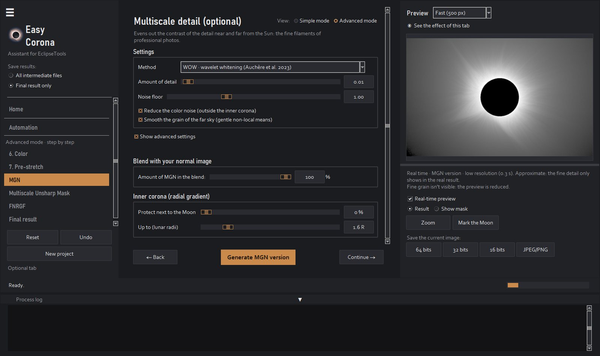
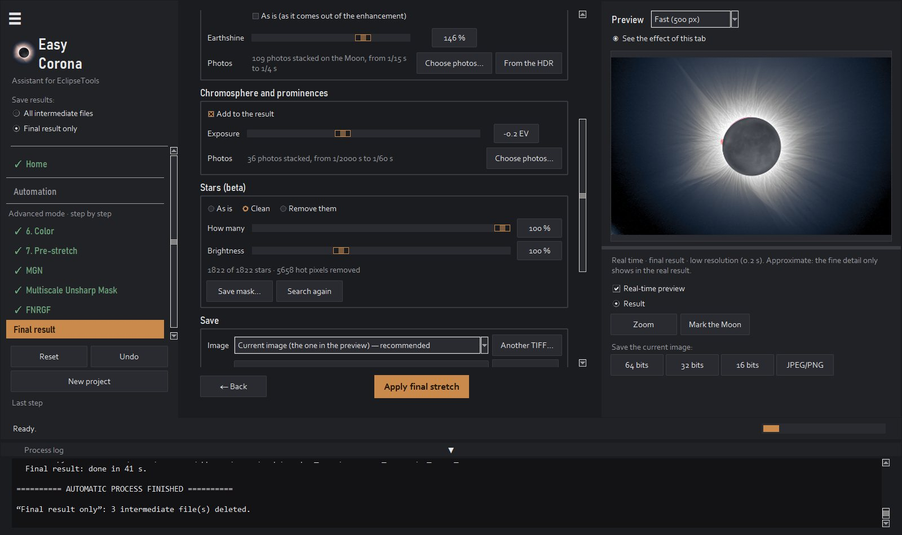
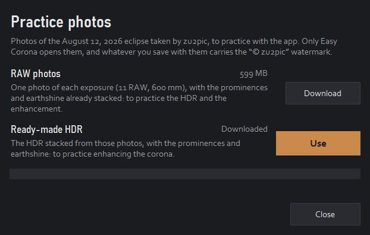

Tutorial
Easy Corona, step by step
Everything the app does, from the photo folder to the final result. In a hurry? Create HDR → Create HDR automatically, add your photos and press Create the HDR. The rest is for fine-tuning.
1
Before you start
The photos. Your series of totality exposures, as RAW (Canon, Nikon, Sony, Fujifilm, Panasonic, Olympus, Pentax, DNG) or TIFF. The more different exposures, the more corona: the short ones keep the prominences and the Moon's edge, and the long ones the distant streamers and the earthshine. Several photos of each exposure reduce the noise.
Optional: darks, bias (offset) and flats for calibration. For the chromosphere and the earthshine, the same photos of the series will do.
Install. On Windows, the installer. On a Mac, open the .dmg and drag Easy Corona to Applications; the first time, System Settings → Privacy & Security → Open Anyway.
Language and text size. The app opens in your computer's language (English or Spanish). Change it in View → Idioma · Language, and the text size in View → Text size; both apply the next time you open it.
Versions. The free version does everything, at 1200 px and with a watermark, so you can see your corona. Premium saves at full size with Simple mode. Premium+ adds Advanced mode and presets.
2
Home
- Create HDR: from your individual photos.
- I already have an HDR: if you already stacked it (with Easy Corona or another program), go straight to enhancing the corona.
- Open a saved project… and, below, the recent ones.
- Practice photos: a real eclipse to learn with before using yours (see section 10).

3
Create the HDR in one click
In Create HDR → Create HDR automatically:
- Your eclipse photos: Add photos… or Add a folder… (they add up, from several folders). The app reads the exposure of each photo and groups them. Dark, Bias or Offset and Flat subfolders are recognized as calibration, and «Cromosfera» and «Cenicienta» ones as photos for those layers.
- Calibration photos (optional): the darks, bias and flats folders, and the box to apply them when reading the RAW files.
- Moon and chromosphere: with the same photos, which exposures are used for the chromosphere (the fastest) and for the earthshine (the longest). The app proposes a choice by looking at one photo of each exposure.
- Output folder: where the HDR and the final result are saved.
- Save results: Final result only (the intermediate steps go to an internal folder and are deleted) or All intermediate files.
- With When done, enhance the corona all the way to the final result, the app carries on by itself to the final image.
Press Create the HDR. Depending on the number of photos it takes from a few minutes to an hour: the bar at the bottom and the window title show the step and the percentage, and you can cancel it.
Two focal lengths beta: if you mix photos from two lenses (for example, 600 and 300 mm), the app makes an HDR for each focal length and joins them: the detail of the long one inside the field of the short one.

4
Create the HDR step by step
In Advanced mode (Premium+), each step has its own tab in the sidebar, with its options and its review:
- Images: the photos and their exposure groups (by ISO, shutter speed and aperture, or by folder). RAW calibration (optional): darks, bias and flats.
- Alignment: each photo of a group on the Moon or on the corona. Refining and checking the alignment corrects what moved and sets aside what doesn't fit (into «_descartadas»). Then a review with the «Difference» of each photo, to remove any you want.
- Average per exposure: the photos of each exposure combined into one, with less noise and a single sharp Moon (no ghosts on its edge).
- Align exposures: the exposures with each other, from the shortest to the longest.
- HDR stacking: everything in a 32-bit HDR, without the saturated parts of each photo and with the edges cropped.
5
Enhancing the corona: Simple mode
In Automation, with the HDR chosen, each slider shows up instantly in the preview. Hover over any of them to see what it does.
- Brightness: that of the corona at 1.3-1.5 lunar radii, in L* (0-100).
- Outer corona: how much the image is stretched before the enhancement. More = more distant corona (and more noise in the sky).
- Fine detail: the fine filaments of the whole corona (MGN or WOW filters). 0 = none.
- Sharpness: the strength of the enhancement passes, the finest detail. If you see «scales» at full size, lower it.
- Structure (FNRGF): rays with the same contrast from inside to outside.
- Inner corona: protects the corona next to the Moon from the filters (if it looks burned or with dark dots there).
- Corona color: the real color of your RAW (a RAW of the session next to the HDR is needed); 0 = white corona. Blue sky: the blue of eclipse photos. Darker sky: the black point.
- Moon: the gray of the disc («as is» = as it comes out of the enhancement). Earthshine: the Moon's maria. Prominences: the exposure of the chromosphere.
- Stars beta: when you move it, the app finds the stars in the HDR, removes them from the result together with the dark ring the filters leave around them (and the hot pixels too) and puts them back clean with that brightness. How many: from the brightest to the faintest. Remove the stars: for a clean sky, it removes almost all of them, the faint ones too, without putting any back. Save star mask… saves their mask for other programs.
Run the process does the whole enhancement and saves the result. If afterwards you only change something of the final result (brightness, sky, Moon, chromosphere or stars), only that step is redone, in seconds. Recommended values goes back to the starting values.


6
The preview
- Quality: from Fast (500 px) to Maximum (2200 px). What you see is calculated with the same functions as the result; at small sizes, the finest detail is approximate.
- See the effect of this tab: turn it off to compare with the previous image. Show mask: only what the filter adds.
- Zoom: the image at full size, with zoom. That's where to judge the fine detail and the stars.
- Mark the Moon: if the app doesn't find the Moon well (burned Moon, unusual photos), drag a circle over it.
- Save the current image: in 64, 32 or 16 bits, or as JPEG/PNG.
7
Advanced mode
With Advanced mode (Premium+), each filter has its own tab. In each one, the button at the bottom applies the filter and the resulting image becomes the current one; Undo goes back and Project → Restore only this tab restores its starting values.
- 6. Color: neutral corona or the real color of your RAW.
- 7. Pre-stretch: how much the image is stretched and the sky gradient that is subtracted.
- MGN: the multiscale detail (MGN, WOW or NAFE), its amount, the noise floor, the color noise and the grain of the distant sky; the blend with your image and the inner corona.
- Multiscale Unsharp Mask: the enhancement passes, each with its radial and tangential radius and its amount.
- FNRGF: the radial normalization (NRGF or RHEF), with its contrast and its color.
- Final result: the next section.

8
Final result: Moon, chromosphere and stars
- Brightness: automatic (the L* you want for the corona) or a manual amount.
- Sky color: the blue and its hue.
- Moon: its gray or «as is»; the earthshine and where it comes from: your long photos (Choose photos…, from any folder) or the HDR itself (From the HDR, only if the maria really show).
- Chromosphere and prominences: the fast photos are stacked separately, erasing the Moon from each one, and added at the end, sharp and with a single Moon. Exposure makes them brighter or darker.
- Stars beta: three modes. As is: as they come out of the enhancement. Clean: removes them with the dark ring the filters leave around them and puts them back clean, with How many and Brightness. Remove them: a clean sky, without putting any back (it also removes the faint and misshapen ones; whatever can't be told apart from the corona stays). Also Save mask… (a 16-bit TIFF the size of the result; white = star with its halo) and Search again. The hot pixels left in the stack (red or blue dots) are removed too.
- Save: the input image, the folder and the name; Export PNG/JPEG for sharing.

9
Files, projects and presets
- 06_final_16bit.tiff: the one to open in Photoshop, Lightroom, Affinity or GIMP (with an sRGB profile). 06_final.tiff is the app's 64-bit one; with «All intermediate files» a linear 32-bit copy is also saved.
- Projects: Project → Save project… saves all the settings and which files it uses; Open project… brings it back (also from Home, among the recent ones).
- Presets (Premium+): Presets → Save preset… saves your enhancement settings in a .json file you can share; Open preset from a file… and Manage presets….
- Reset takes everything back to the initial HDR; New project starts from scratch; Project → Free up working space… deletes old internal folders.
10
Practice photos, language and license
- Practice photos (Home or Help → Practice photos…): zu2pic's RAW photos of the August 12, 2026 eclipse, or their ready-made HDR. Only Easy Corona opens them, and whatever you save with them carries the «© zu2pic» watermark.
- New version notices: in the free version, Help → New version notices… signs you up (or off) to get an email when a new version comes out.
- License: when you buy, you get the key by email; paste it in License → Activate license…. No internet needed: the key is checked on your computer.

11
Tips
- Always judge the result at full size (Zoom): if you see «scales» or grain, lower Sharpness or Fine detail.
- If the area next to the Moon looks burned or has dark dots, raise Inner corona.
- If the Moon is misplaced or shows a ring, use Mark the Moon.
- To retouch in another program, use the 16-bit TIFF: the 32-bit one is linear and many programs treat it as HDR.
- Stars are a feature in testing beta: check them at full size and, if some don't convince you, lower How many or remove them.
- Questions or a bug? Write to zu3run@gmail.com with the «registro.txt» file from the EasyCorona folder of your user account.